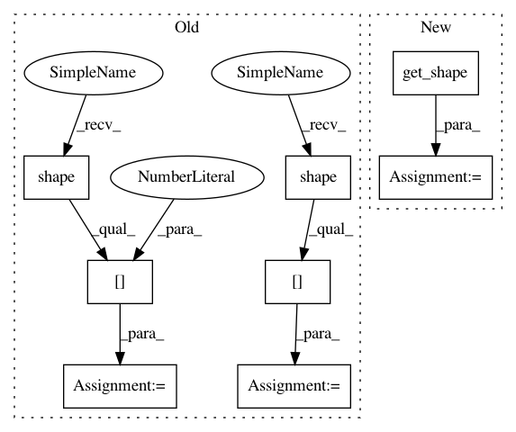

a4d9c3a0656639f00ea0050e6535f7bf547d8719,research/object_detection/meta_architectures/faster_rcnn_meta_arch.py,FasterRCNNMetaArch,_predict_third_stage,#FasterRCNNMetaArch#Any#Any#,794
Before Change
box_predictor.MASK_PREDICTIONS], axis=1)
detection_masks = self._gather_instance_masks(detection_masks,
detection_classes)
mask_height = tf.shape(detection_masks)[1]
mask_width = tf.shape(detection_masks)[2]
prediction_dict[fields.DetectionResultFields.detection_masks] = (
tf.reshape(detection_masks,
[batch_size, max_detection, mask_height, mask_width]))
return prediction_dict
After Change
box_predictor.MASK_PREDICTIONS], axis=1)
_, num_classes, mask_height, mask_width = (
detection_masks.get_shape().as_list())
_, max_detection = detection_classes.get_shape().as_list()
if num_classes > 1:
detection_masks = self._gather_instance_masks(
detection_masks, detection_classes)
In pattern: SUPERPATTERN
Frequency: 3
Non-data size: 8
Instances
Project Name: tensorflow/models
Commit Name: a4d9c3a0656639f00ea0050e6535f7bf547d8719
Time: 2018-04-13
Author: lzc@google.com
File Name: research/object_detection/meta_architectures/faster_rcnn_meta_arch.py
Class Name: FasterRCNNMetaArch
Method Name: _predict_third_stage
Project Name: tensorflow/models
Commit Name: a4d9c3a0656639f00ea0050e6535f7bf547d8719
Time: 2018-04-13
Author: lzc@google.com
File Name: research/object_detection/meta_architectures/faster_rcnn_meta_arch.py
Class Name: FasterRCNNMetaArch
Method Name: _predict_third_stage
Project Name: tensorflow/models
Commit Name: a4d9c3a0656639f00ea0050e6535f7bf547d8719
Time: 2018-04-13
Author: lzc@google.com
File Name: research/object_detection/meta_architectures/faster_rcnn_meta_arch.py
Class Name: FasterRCNNMetaArch
Method Name: _gather_instance_masks
Project Name: Bihaqo/t3f
Commit Name: 92e936b10af3f12fcbb1ad00b50b9c82b09503a7
Time: 2017-02-11
Author: novikov@bayesgroup.ru
File Name: ops.py
Class Name:
Method Name: tt_sparse_flat_inner